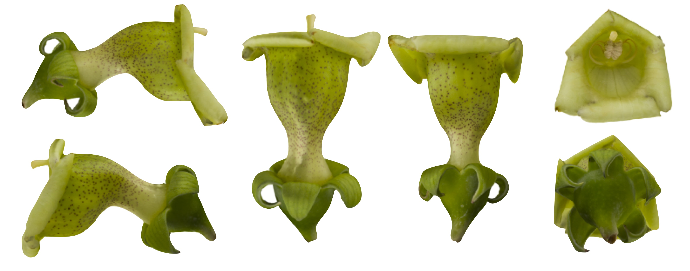

Flower photogrammetry and 3D modeling protocol
2022-09-21
1 About
This protocol is an evolving protocol used in the Joly lab at the Université de Montréal (Canada)
This protocol describes how to obtain three-dimensional (3D) reconstructions of flowers using photogrammetry. It describes in details the set-up, settings and steps that has worked for us for building accurate flower models, but other approaches are certainly possible. Hence, we hope this protocol serves as a starting point rather than a final protocol. We welcome any comments.

1.1 Citation
Leménager, M., J. Burkiewicz, D. J. Schoen, S. Joly. Studying flowers in 3D using photogrammetry. New Phytologist. Accepted pending minor revisions.
1.2 Contributing
This protocol was produced with bookdown and is hosted on github. Please do not hesitate to fork the protocol, modify it and make pull requests to improve it!